Into The Fog
Genre-bending jamgrass from Raleigh, North Carolina
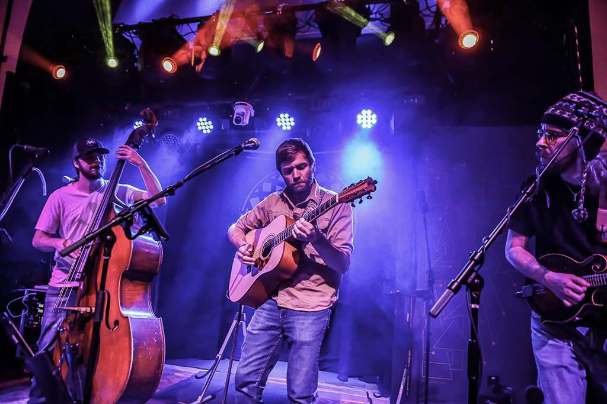
Photo taken by Cloud Bobby Productions
Into the Fog is an award-winning bluegrass band known for blending genres and delivering high energy performances. After starting in 2017, Into the Fog quickly solidified themselves as a genuine part of the North Carolina music community; releasing multiple albums and forming an extensive history of touring.
The band is currently on hiatus, exploring separate ventures, and may return when the time feels right.
Discography

Carolina Moon
2024
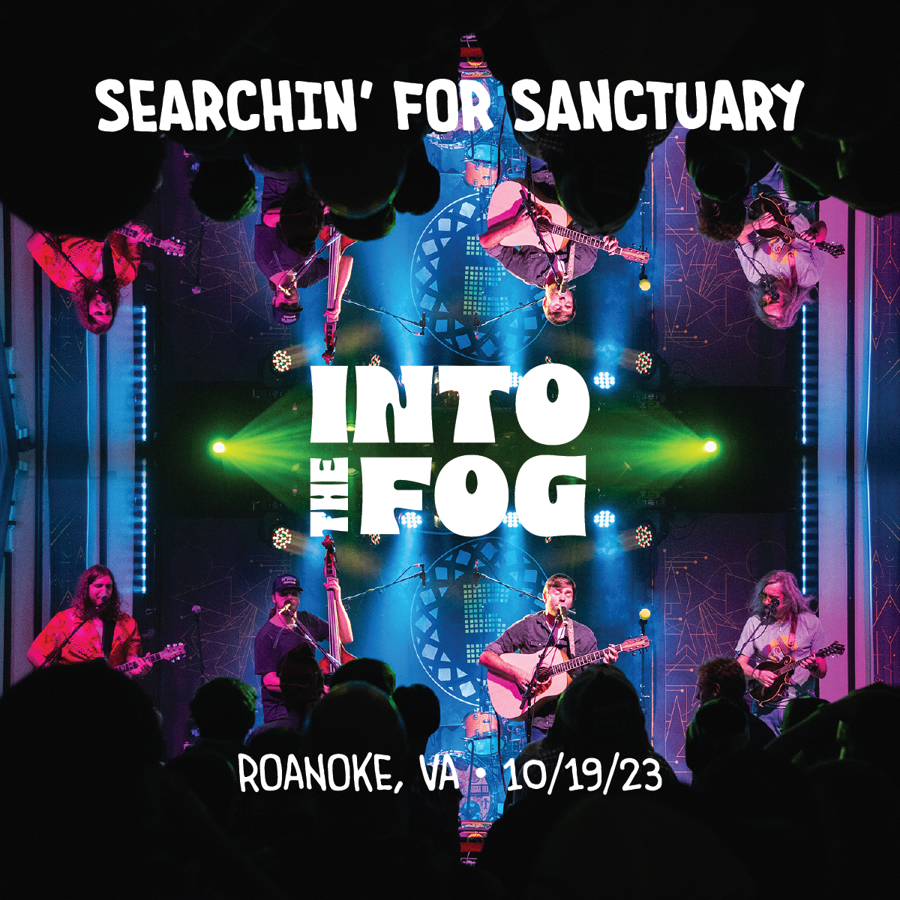
Searchin' for Sanctuary (Live)
2024
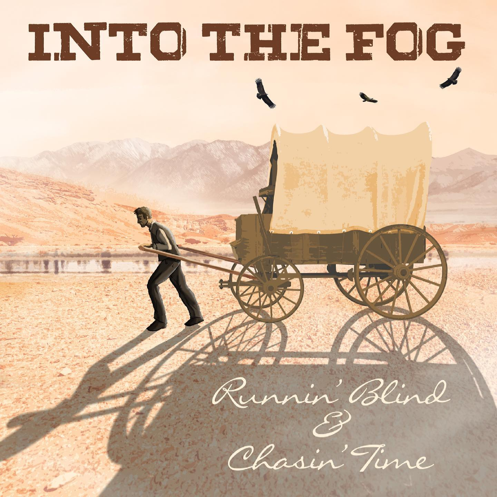
Runnin' Blind and Chasin' Time
2021
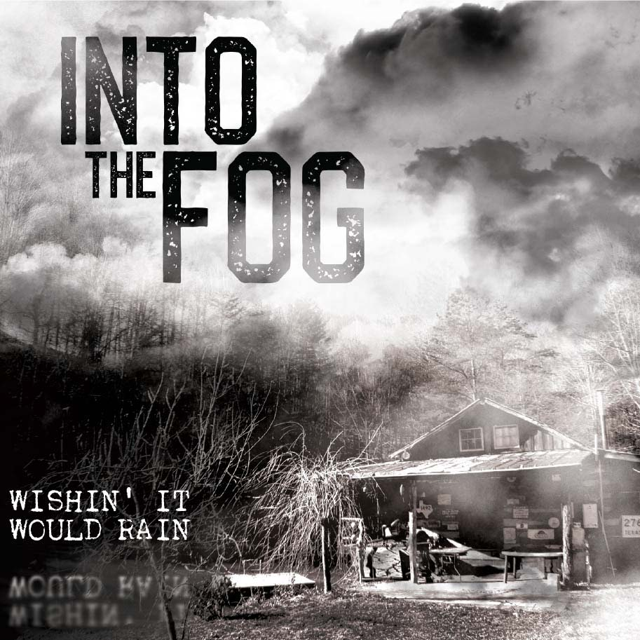
Wishin' It Would Rain
2019
About the Band
Into The Fog is a genre-defying bluegrass band from Raleigh, North Carolina, blending traditional roots with funk, rock, and improvisational jam elements. Known for tight harmonies and progressive instrumentation, the band carved out a sound that's both grounded and boundary-pushing.
Their rise in the roots music scene was cemented with a win at the 2021 MerleFest Band Competition, leading to appearances at major festivals including IBMA World of Bluegrass, FloydFest, Grey Fox, Rooster Walk, and Earl Scruggs Music Festival. Over the years, Into The Fog released multiple albums and live records, expanded their sonic palette, and shared stages with artists such as Sam Bush, Keller & The Keels, Town Mountain, and Daniel Donato.
In 2024, the band released album Carolina Moon and continued touring nationally before announcing an indefinite hiatus in June 2025. While members now pursue separate creative ventures, Into The Fog's legacy as one of North Carolina's most adventurous acoustic acts continues to resonate within the roots and jam communities.
Read MoreMain Contributors
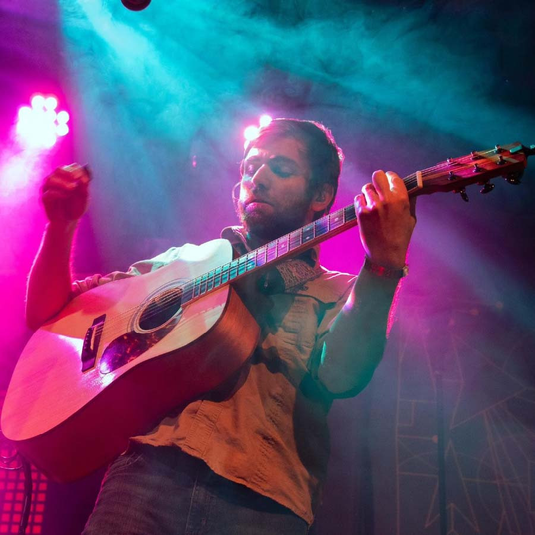
Brian Stephenson
-Acoustic Guitar
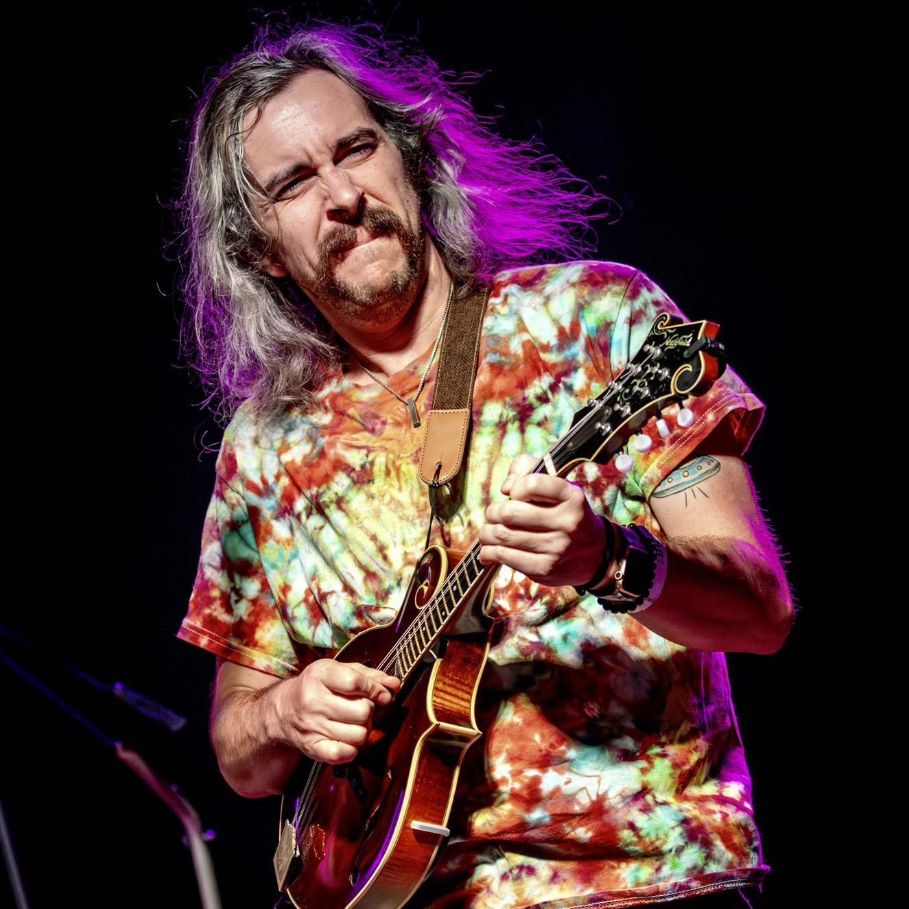
Wiston Mitchell
-Mandolin
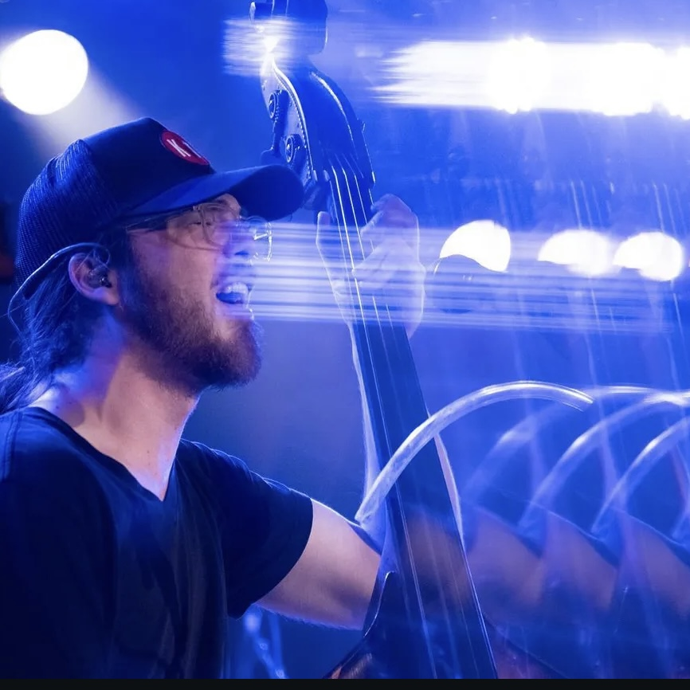
Derek Lane
-Upright Bass
Past Members/ Foggy Friends
Will Maxwell
-Fiddle
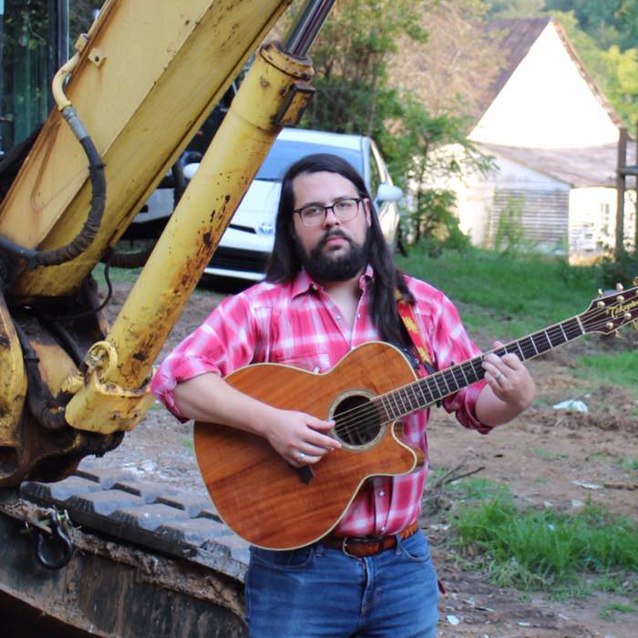
Jack Snyder
-Vocals, Album Artwork
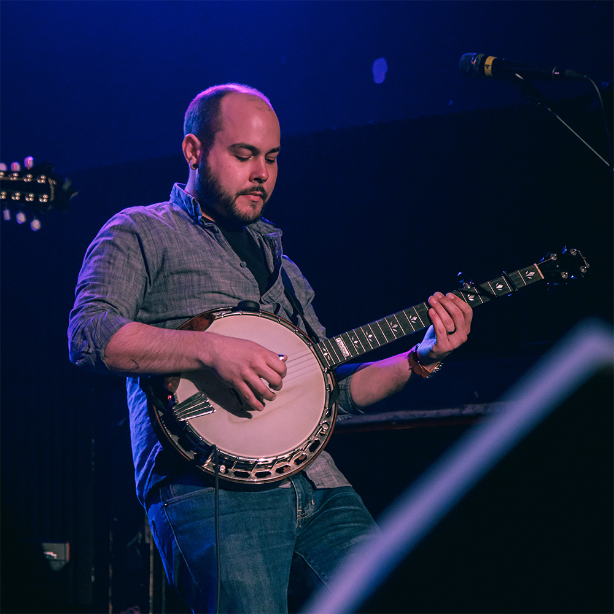
Michael Malek
-Banjo
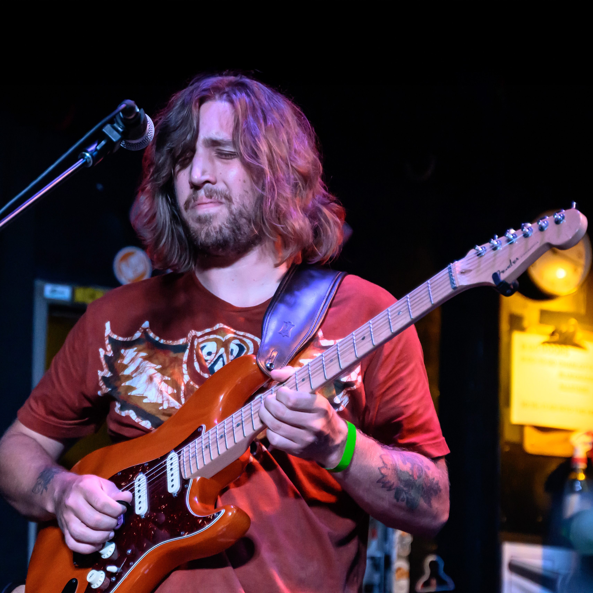
Connor Kozlosky
-Electric Guitar
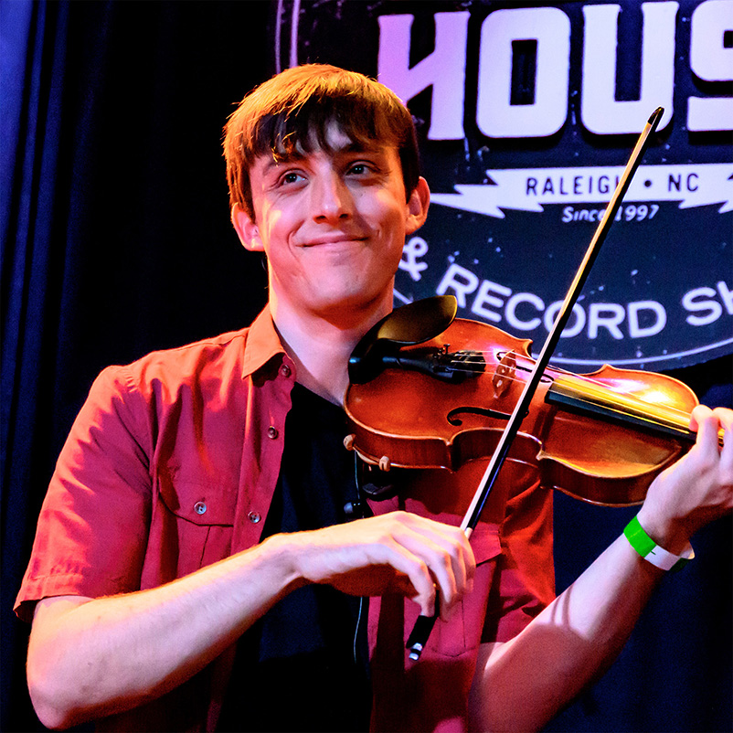
Sam Stage
-Fiddle
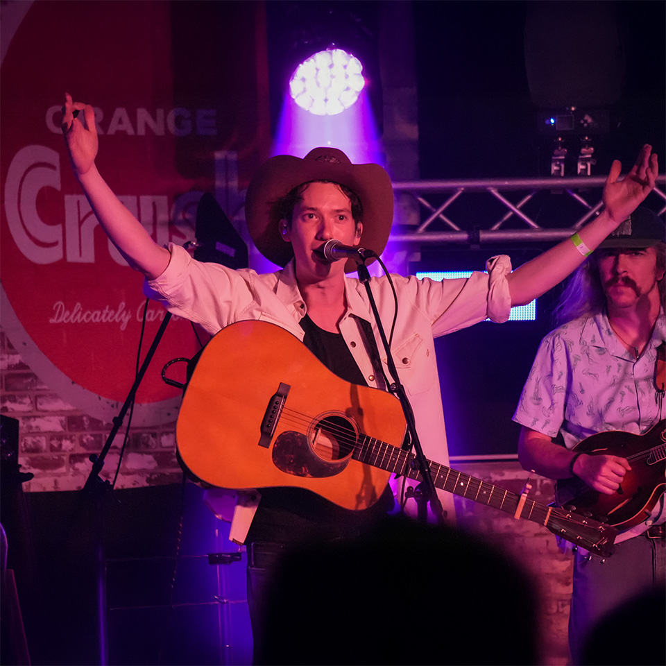
Mason Via
-Acoustic Guitar
Watch us on Youtube
We have a ton of live shows uploaded plus some off stage fun!
Youtube